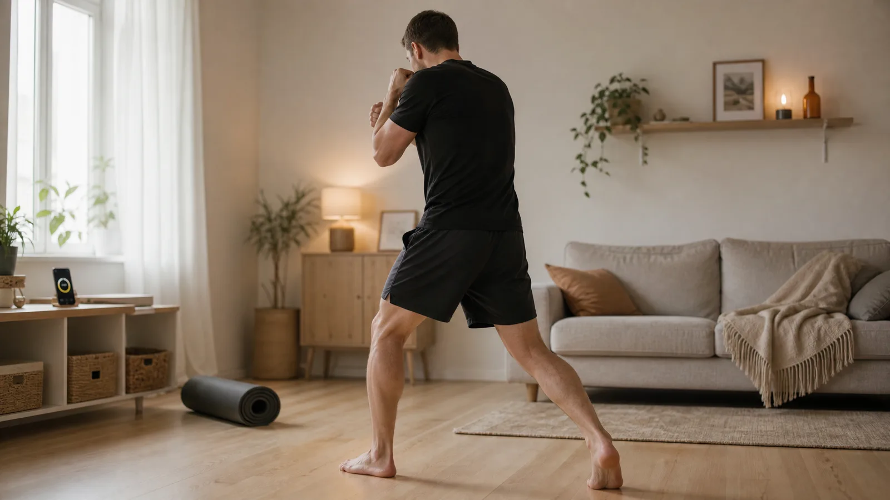

Viele, die boxen wollen, fangen zu Hause an, mit Videos oder nach Gefühl vor dem Fernseher. Ohne Blick von außen schleichen sich dabei typische Fehler ein: Der Jab sitzt einigermaßen, die Deckung fällt bei jedem zweiten Schlag, und nach der ersten Runde ist die Luft weg, weil beim Schlagen nicht ausgeatmet wird.
Das ist kein Vorwurf. Zu Hause zu üben ist ein guter Anfang, wenn du weißt, worauf es ankommt. Dieser Artikel zeigt dir die Grundstellung in Links- und Rechtsauslage, die Deckung, die Beinarbeit und die vier Grundschläge, jeweils Schritt für Schritt und mit den typischen Anfängerfehlern. Dazu kommen ein 20-Minuten-Plan ohne Sandsack, ein Aufbau über vier Wochen und die Regeln, mit denen du dich dabei nicht verletzt.
Zahlen stammen aus Studien oder Regelwerken, die Quellen stehen unter den Grafiken und am Ende. Am Schluss steht, was du zu Hause nicht lernen kannst.
Vorab: Wenn du Vorerkrankungen hast, länger keinen Sport gemacht hast oder Beschwerden an Schulter, Ellenbogen oder Handgelenk spürst, klär vor dem Start mit einer Ärztin oder einem Arzt, was für dich passt. Dieser Artikel ersetzt keine medizinische Beratung und kein Training unter Anleitung.
Kann man Boxen zu Hause lernen?
Die Grundlagen ja, das Boxen als Zweikampf nicht. Stand, Deckung, Beinarbeit und die Mechanik der Schläge sind Bewegungsmuster, die du allein üben kannst, am besten langsam und vor einem Spiegel. Was dir zu Hause fehlt, ist ein Gegenüber: jemand, der sich bewegt, zurückschlägt und dir zeigt, ob deine Distanz stimmt.
Wie viel in einer echten Runde passiert, zeigt eine Videoanalyse von 29 Halbfinal- und Finalkämpfen bei Olympischen Spielen (Davis und Kollegen, 2015). Die Boxer schlugen im Schnitt rund 20 Schläge pro Minute. Dazu kamen etwa 2,5 Abwehrbewegungen und rund 47 Auf-und-ab-Bewegungen aus der Hüfte, ebenfalls pro Minute. Das meiste davon ist Reaktion auf den Gegner. Zu Hause baust du die Technik, aus der diese Reaktionen später entstehen.
Was du zu Hause lernen kannst und wofür du ein Gegenüber brauchst
| Bereich | Zu Hause allein | Braucht Partner oder Trainer |
|---|---|---|
| Grundstellung und Deckung | gut, mit Spiegel oder Video | prüfen, ob die Deckung unter Druck hält |
| Beinarbeit | gut: vor, zurück, seitlich, Drehung | Distanz zu einem Gegner, der sich bewegt |
| Jab, Cross, Haken, Uppercut | Bewegungsablauf, Atmung, Rückweg der Hand | ein Ziel treffen, Härte, Timing |
| Kombinationen | gut, als feste Abfolgen | Kombinationen als Antwort auf eine Aktion |
| Abwehr | Grundbewegungen ohne Gegner | Blocken und Ausweichen gegen echte Schläge |
| Kondition | sehr gut, in Runden mit Timer | kaum nötig |
| Sparring | nicht möglich und nicht sinnvoll | nur unter Aufsicht, mit Schutzausrüstung |
Eigene Einordnung aus der Trainingspraxis, keine Studie.
Was brauchst du für Boxtraining zu Hause?
Weniger, als die Werbung nahelegt. Für alles in diesem Artikel reichen eine freie Fläche, auf der du zwei, drei Schritte in jede Richtung machen kannst, ein Spiegel oder eine Handykamera und ein Rundentimer. Einen Sandsack brauchst du für den Anfang nicht.
- Platz: Mit ausgestreckten Armen stößt du nirgends an, auch nicht nach oben.
- Spiegel oder Kamera: Ein Spiegel zeigt dir von vorn, ob die Deckung fällt, eine Handyaufnahme von der Seite, ob deine Hand auf dem gleichen Weg zurückkommt.
- Timer: eine Rundenuhr-App oder der Wecker im Handy.
- Boden und Schuhe: ein rutschfester Boden, barfuß oder in flachen Hallenschuhen. Dicke, stark profilierte Laufschuhe bremsen die Drehung auf dem Fußballen.
- Bandagen und Handschuhe: Für Luftschläge brauchst du sie nicht. Sobald du auf etwas schlägst, gehören beide an die Hände. Bei World Boxing wiegen Wettkampfhandschuhe 284 Gramm (etwa 10 Unzen) oder 340 Gramm (etwa 12 Unzen), Klettbandagen sind 3,5 bis 4,5 Meter lang und 5,7 Zentimeter breit. Welche Unzen zu deinem Gewicht passen und wie du Bandagen wickelst, steht in unserem Artikel „Kickboxen Ausrüstung für Anfänger“.

Wie stehst du richtig: Links- oder Rechtsausleger?
Als Rechtshänder stehst du in der Linksauslage: linker Fuß und linke Hand vorn, die rechte Hand ist deine Schlaghand. Linkshänder stehen meist spiegelverkehrt in der Rechtsauslage. Der Duden beschreibt sie genau so: als Auslage des linkshändigen Boxers, der das rechte Bein vorsetzt und dessen rechte Hand die Führhand ist. Wer so steht, ist Rechtsausleger; im Englischen heißt die Linksauslage „orthodox“, die Rechtsauslage „southpaw“.
Rechtsausleger sind im Profiboxen häufiger, als ihr Anteil in der Bevölkerung erwarten lässt. Eine Auswertung von mehr als 13.800 Profiboxern und MMA-Kämpfern (Richardson und Gilman, 2019) fand unter den aktiven männlichen Profiboxern 17,0 % in Rechtsauslage, während in der Bevölkerung 12,6 % der Männer Linkshänder sind. Die Linkshänder waren außerdem erfolgreicher. Es gibt also keinen Grund, Linkshänder in die Linksauslage zu zwingen. Nimm die Seite, auf der deine stärkere Hand hinten liegt: Von dort hat sie den längsten Weg und die meiste Kraft.
So stehst du in der Grundstellung:
- Stell dich hüftbreit hin, Blick nach vorn. Mach mit dem rechten Fuß einen halben Schritt nach hinten, in der Rechtsauslage mit dem linken.
- Dreh den hinteren Fuß leicht nach außen und heb die Ferse ein wenig an. Dein Gewicht ruht auf beiden Fußballen.
- Die Füße stehen etwa schulterbreit versetzt und nicht hintereinander auf einer Linie. Von oben betrachtet stehen sie wie auf zwei Schienen, nicht auf einem Drahtseil.
- Beug die Knie leicht. Du sollst federn können, nicht sitzen.
- Dreh Hüfte und Schultern ein Stück zur Seite, sodass deine vordere Schulter nach vorn zeigt. So bietest du weniger Fläche.
Fußstellung von oben: Linksauslage und Rechtsauslage
Eigene Darstellung. Begriffe nach Duden: Linksauslage und Rechtsauslage. Fußabstand und Winkel sind Richtwerte aus der Trainingspraxis, keine Norm.
Typische Fehler:
- Füße auf einer Linie. Ein leichter Stoß von der Seite, und du kippst. Prüf es im Spiegel von vorn: Beide Füße müssen sichtbar nebeneinander versetzt sein.
- Zu breit oder zu tief. Sieht stabil aus, macht dich aber langsam. Kannst du nicht locker federn, stell dich enger.
- Frontal zum Spiegel. Brust und Bauch zeigen komplett nach vorn. Dreh dich so weit ein, dass die vordere Schulter vorn ist.
- Hintere Ferse klebt am Boden. Dann fehlt dir beim Cross die Drehung aus dem hinteren Bein.
Wie hältst du die Deckung richtig?
Die Hände schützen dein Kinn, die Ellenbogen deinen Körper. Die Faust der Schlaghand liegt an der Wange neben dem Kinn, die Führhand ist etwas weiter vorn auf Höhe von Augen oder Nase, und beide Ellenbogen hängen locker vor den Rippen. Das Kinn ist leicht gesenkt, der Blick geht unter den Augenbrauen hindurch nach vorn.
So baust du die Deckung auf:
- Mach eine feste Faust: Finger einrollen, den Daumen außen über Zeige- und Mittelfinger legen, nie in die Faust stecken.
- Leg die hintere Faust an die Wange neben dem Kinn.
- Halt die vordere Faust etwa eine Faustbreite vor dem Gesicht, auf Höhe von Augen oder Nase.
- Lass die Ellenbogen nach unten hängen, nah am Körper.
- Senk das Kinn leicht und lass die Schultern locker, nicht hochgezogen.
- Nach jedem Schlag kommt die Hand genau hierhin zurück. Das ist die wichtigste Regel in diesem Artikel.
Wie wichtig eine saubere Faust ist, steht sogar im Regelwerk. Nach den Wettkampfregeln von World Boxing zählt ein Treffer unter anderem nur dann, wenn er mit der Knöchelfläche des Handschuhs landet und das Gewicht von Körper oder Schulter dahintersteht. Schläge mit offenem Handschuh, mit der Innenseite des Handschuhs oder mit Handgelenk und Handkante sind Fouls. Für dich zu Hause heißt das: Übe von Anfang an eine feste Faust und ein gerades Handgelenk, auch wenn du nur in die Luft schlägst.
Typische Fehler:
- Die Führhand sinkt. Nach ein paar Jabs hängt sie auf Brusthöhe. Im Spiegel siehst du das sofort.
- Die Ellenbogen gehen nach außen. Die Rippen liegen frei.
- Die Hand bleibt nach dem Schlag draußen. Das ist der häufigste Fehler überhaupt.
- Der Daumen steckt in der Faust. Er gehört außen auf die Finger, damit die Faust geschlossen und stabil bleibt.
Wie bewegst du dich? Beinarbeit für Anfänger
Die Grundregel lautet: Der Fuß, der näher an der Richtung liegt, in die du willst, geht zuerst, der andere zieht nach. Vorwärts setzt du zuerst den vorderen Fuß, rückwärts zuerst den hinteren, nach links zuerst den linken, nach rechts zuerst den rechten. Danach stehst du wieder genau in deiner Grundstellung. Die Füße kreuzen nie und kommen sich nie so nahe, dass sie sich berühren.
So übst du die Grundschritte:
- Vorwärts: Schieb den vorderen Fuß eine Fußlänge flach über den Boden nach vorn und zieh den hinteren um dieselbe Strecke nach.
- Rückwärts: Drück dich vom vorderen Fuß ab, setz den hinteren Fuß zuerst zurück und zieh den vorderen nach.
- Zur Seite: In der Linksauslage geht beim Schritt nach links der linke Fuß zuerst, der rechte zieht nach. Nach rechts ist es umgekehrt.
- Drehung: Dreh auf dem Ballen des vorderen Fußes und lass den hinteren Fuß einen Viertelkreis herumschwingen. So änderst du den Winkel, ohne zu laufen.
Übung für die erste Woche: Kleb ein Kreuz aus Malerkrepp auf den Boden, stell dich in die Mitte und mach vier Schritte in eine Richtung. Halt an, prüf im Spiegel die Grundstellung, dann die nächste Richtung.
Typische Fehler:
- Springen statt schieben. Kleine, flache Schritte. Hüpfen kostet Kraft, und in der Landung kannst du nicht reagieren.
- Füße kreuzen, vor allem beim Schritt zur Seite.
- Nur ein Fuß bewegt sich. Wer nur den vorderen Fuß vorsetzt und den hinteren stehen lässt, wird mit jedem Schritt breiter.
- Die Hände fallen beim Gehen. Die Deckung bleibt oben, auch wenn die Beine arbeiten.
Welche vier Grundschläge gibt es im Boxen?
Jab, Cross, Haken und Uppercut. Jab und Cross sind gerade Schläge, der Haken kommt von der Seite, der Uppercut von unten. In vielen Boxgyms werden sie durchnummeriert: 1 ist der Jab, 2 der Cross, 3 der Haken mit der Führhand, 4 der Haken mit der Schlaghand, 5 und 6 sind die Uppercuts mit Führ- und Schlaghand. Ein „1-2“ heißt also Jab und Cross. Eine offizielle Verbandsnorm ist das nicht, manche Trainer zählen anders.
Die geraden Schläge sind die Basis. Eine Analyse von 50 WM-Kämpfen nach der Regeländerung von 2013 (Davis und Kollegen, 2018) beschreibt das Amateurboxen als Kampf auf langer Distanz mit geraden Schlägen; die Sieger schlugen in der ersten Runde mehr davon, auch mit der Führhand.
Die vier Grundschläge als Schema (Linksauslage)
Eigene Darstellung. Nummerierung nach der in Boxgyms verbreiteten Zählweise, siehe Evolve MMA: Boxing Punch Number System; keine Verbandsnorm. In der Rechtsauslage sind alle Bahnen gespiegelt.
Schlag 1 · FührhandWie schlägst du einen Jab?
Der Jab ist der schnelle gerade Schlag mit der Führhand. Mit ihm misst du die Distanz, störst den Gegner und eröffnest viele Kombinationen.
- Streck aus der Grundstellung die vordere Hand gerade nach vorn, auf Kinnhöhe deines gedachten Gegners.
- Kurz vor dem Ende dreht sich die Faust nach innen, bis der Handrücken nach oben zeigt.
- Die vordere Schulter hebt sich ein Stück und schützt dein Kinn.
- Gleichzeitig atmest du kurz aus.
- Die Hand kommt auf demselben Weg zurück, mindestens so schnell, wie sie hinausging. Die Schlaghand bleibt an der Wange.
Typische Fehler:
- Ausholen. Die Hand zuckt vor dem Schlag zurück oder nach unten, und der Gegner sieht ihn kommen.
- Den Arm einrasten lassen. Lass den Ellenbogen am Ende minimal gebeugt, gerade bei Luftschlägen. Sonst fängt das Ellenbogengelenk den Schwung ab.
- Die Hand kommt tief zurück, auf Brusthöhe statt am Kinn.
- Der Oberkörper lehnt sich nach vorn. Die Reichweite kommt aus Arm und Schulter, nicht aus dem Rücken.
Wenn der Jab im Stand sitzt, kommt der Schritt-Jab dazu: Setz beim Schlagen den vorderen Fuß nach vorn und zieh den hinteren nach. So überbrückst du Distanz.
Schlag 2 · SchlaghandWie schlägst du einen Cross?
Der Cross ist der gerade Schlag mit der hinteren Hand und der stärkste der Grundschläge. In einer Labormessung mit zehn männlichen Amateurboxern (Stewart und Kollegen, 2025) erzeugte er von sechs Schlagarten die höchste Schlagkraft, im Mittel 1.475 Newton, und die höchste Bodenreaktionskraft. Entscheidend ist laut den Autoren vor allem der Abdruck des hinteren Beins.
- Drück dich mit dem hinteren Fuß vom Boden ab. Der Ballen dreht auf dem Boden, die Ferse zeigt danach nach außen.
- Die Drehung läuft über Knie und Hüfte in die Schulter, die hintere Hüfte schiebt nach vorn.
- Die Faust geht auf der kürzesten Linie gerade zum Ziel und dreht sich am Ende, bis der Handrücken oben ist.
- Die vordere Hand bleibt oben am Gesicht.
- Mit dem Schlag atmest du aus, dann geht alles auf demselben Weg zurück in die Grundstellung.
Typische Fehler:
- Nur aus dem Arm. Ferse und Hüfte bleiben stehen, der Schlag wird kurz und schwach.
- Die vordere Hand fällt. Im Spiegel siehst du dann dein offenes Kinn.
- Hinterherfallen. Das Gewicht kippt über das vordere Knie. Nach dem Cross solltest du sofort einen Schritt zurück machen können.
Schläge 3 und 4 · beide HändeWie schlägst du einen Haken?
Der Haken ist ein seitlicher Schlag auf kurzer bis mittlerer Distanz, mit der Führhand oder der Schlaghand, zum Kopf oder zum Körper. In der Analyse olympischer Kämpfe (Davis und Kollegen, 2015) landeten die Sieger in der zweiten und dritten Runde mehr Haken mit der Schlaghand als die Verlierer.
- Heb aus der Grundstellung, ohne auszuholen, den vorderen Ellenbogen seitlich an, bis der Unterarm ungefähr waagerecht ist.
- Der Arm bleibt im Ellenbogen angewinkelt, etwa im rechten Winkel.
- Den Schwung holst du aus der Drehung: Der vordere Fuß dreht auf dem Ballen nach innen, Hüfte und Schulter drehen mit.
- Die Faust zieht auf Kinnhöhe quer vor deinen Körper, nicht weiter als bis zur Mitte. Ob der Handrücken nach oben oder zur Seite zeigt, ist Stilfrage; das Handgelenk bleibt gerade.
- Kurz ausatmen, zurück in die Deckung.
- Der Haken mit der Schlaghand funktioniert gespiegelt, mit der Drehung über den hinteren Fuß.
Typische Fehler:
- Ausholen nach hinten. Wer den Arm zuerst nach außen zieht, macht aus dem Haken einen Schwinger, den man kommen sieht.
- Der Arm öffnet sich. Wird der Winkel im Ellenbogen weiter, wird der Schlag lang und langsam.
- Keine Drehung. Nur der Arm schwingt, Hüfte und Fuß stehen still.
- Die andere Hand vergessen. Beim Haken mit der Führhand bleibt die Schlaghand an der Wange.
Schläge 5 und 6 · beide HändeWie schlägst du einen Uppercut?
Der Uppercut, auf Deutsch Aufwärtshaken, ist ein kurzer Schlag von unten nach oben, gegen Kinn oder Körper. Er funktioniert nur auf kurzer Distanz. Übe ihn deshalb so, als stünde der Gegner direkt vor dir.
- Beug die Knie etwas tiefer und senk die hintere Schulter ein Stück ab, ohne die Hand vom Kinn zu nehmen.
- Drück dich aus den Beinen hoch und dreh die hintere Hüfte nach vorn.
- Die Faust steigt im angewinkelten Arm nach oben, die Handfläche zeigt zu dir, bis auf Kinnhöhe des Gegners.
- Kurz ausatmen. Die Faust stoppt vor deinem Gesicht und geht direkt zurück an die Wange.
- Der Uppercut mit der Führhand geht gespiegelt über die vordere Hüfte.
Typische Fehler:
- Die Hand fällt zuerst nach unten, auf Bauchhöhe. In diesem Moment ist dein Kopf offen.
- Der Arm streckt sich. Ein gestreckter Uppercut ist eine Schaufelbewegung ohne Wirkung.
- Kraft nur aus dem Arm. Die Bewegung kommt aus den Beinen.
- Zu hoch. Die Faust zielt aufs Kinn, nicht über den Kopf.
Die vier Grundschläge auf einen Blick (Linksauslage)
| Schlag | Nr. | Hand | Bahn | Distanz | Häufigster Fehler |
|---|---|---|---|---|---|
| Jab | 1 | links (Führhand) | gerade | lang | Hand kommt tief zurück |
| Cross | 2 | rechts (Schlaghand) | gerade, aus der Hüfte | lang | hintere Ferse dreht nicht mit |
| Haken | 3 und 4 | links oder rechts | seitlich, waagerecht | kurz bis mittel | Ausholen nach hinten |
| Uppercut | 5 und 6 | links oder rechts | von unten nach oben | kurz | Hand fällt vorher nach unten |
In der Rechtsauslage tauschen linke und rechte Hand. Fehlerangaben: Beobachtung aus der Trainingspraxis.
Wie atmest du beim Boxen richtig?
Mit jedem Schlag atmest du kurz und kräftig durch den Mund aus, zwischen den Schlägen atmest du ruhig ein. Ein typischer Anfängerfehler ist das Gegenteil: beim Schlagen die Luft anhalten. Das fühlt sich fest und kraftvoll an, aber nach einer Minute ist der Atem weg, die Schultern sind hart, und die Schläge werden langsamer.
- Ein Schlag, ein Atemstoß. Ein kurzes „tss“ oder „sch“, die Zähne bleiben dabei leicht geschlossen. Später mit Mundschutz geht es genauso.
- Bei Kombinationen zählt jeder Schlag. Bei 1-2-3 sind das drei kurze Stöße, nicht ein langer.
- In den Pausen bewusst ruhig atmen: durch die Nase ein, durch den Mund aus, langsamer als in der Runde.
- Wenn du merkst, dass du die Luft anhältst: Tempo raus, langsamer schlagen, bis das Ausatmen wieder von allein mitläuft.
Was bringt Boxtraining zu Hause für deine Fitness?
Boxtraining in Runden kann ein intensives Ausdauertraining sein. Wie intensiv, hängt stark davon ab, was du genau tust. Das Compendium of Physical Activities, eine wissenschaftliche Referenzliste für den Energieverbrauch von Tätigkeiten, gibt in seiner Fassung von 2024 für Boxen am Sandsack 5,8 MET an, für Sparring 7,8, für eine simulierte Boxrunde als Übung 9,3 und für Boxen im Ring 12,3. Der MET-Wert gibt an, das Wievielfache des Ruheumsatzes eine Tätigkeit verbraucht.
Wie anstrengend ist Boxen? MET-Werte im Vergleich
Quelle: 2024 Adult Compendium of Physical Activities, Sports (Codes 15100, 15110, 15120, 15125) sowie Walking (17220) und Running (12020); Herrmann und Kollegen, 2024. Abgerufen im Oktober 2026.
Welcher Eintrag deinem Heimtraining am nächsten kommt, lässt sich nicht exakt sagen. Runden mit Schlägen und Beinarbeit liegen vermutlich zwischen dem Sandsack-Eintrag und der simulierten Runde, je nach Tempo. Einen Anhaltspunkt für den Puls gibt eine kleine Laborstudie mit 18 trainierten Freiwilligen, im Schnitt 22 Jahre alt (Kravitz und Kollegen, 2003). In zweiminütigen Fitnessbox-Durchgängen mit 340-Gramm-Handschuhen und vorgegebenem Schlagtempo lag ihre Herzfrequenz bei 85 bis 93 % des Maximums. Auf Anfänger beim Schattenboxen im Wohnzimmer lässt sich das nicht eins zu eins übertragen.
Die bisher passendste Studie zum Training im Wohnzimmer stammt aus Thailand (Areeudomwong und Kollegen, 2026). 58 junge Erwachsene zwischen 20 und 30 Jahren, die bis dahin kaum Sport gemacht hatten, wurden per Los auf zwei Gruppen verteilt. Die eine Gruppe trainierte sechs Wochen lang dreimal pro Woche zu Hause Thai-Boxing-Intervalle nach Videoanleitung: nach fünf Minuten Aufwärmen acht Belastungen zu je 60 Sekunden mit vollem Einsatz (Schläge, Knie- und Ellenbogentechniken, Tritte), dazwischen jeweils 60 Sekunden lockeres Schlagen auf der Stelle. Die Vergleichsgruppe trainierte Kräftigung und moderate Bewegung. Nach sechs Wochen war die maximale Sauerstoffaufnahme in der Thai-Boxing-Gruppe im Mittel von 39,95 auf 45,42 Milliliter pro Kilogramm und Minute gestiegen, deutlich stärker als in der Vergleichsgruppe. Unerwünschte Ereignisse traten nicht auf.
Das ist eine einzelne, kleine Studie, und Muay-Thai-Techniken sind nicht dasselbe wie Boxen. Sie deutet aber darauf hin, dass ein strukturiertes Programm in den eigenen vier Wänden die Ausdauer messbar verbessern kann. Zur Einordnung: Die Weltgesundheitsorganisation empfiehlt Erwachsenen pro Woche 150 bis 300 Minuten moderate oder 75 bis 150 Minuten intensive Ausdauerbewegung oder eine Kombination aus beidem (Bull und Kollegen, 2020). Im 20-Minuten-Plan unten sind rund zehn Minuten echte Rundenarbeit. Er ist damit ein guter Baustein, aber noch kein vollständiges Wochenprogramm.
Wie lange dauert eine Runde im Boxen?
Im olympischen Boxen dauert eine Runde drei Minuten, mit einer Minute Pause. Nach den Wettkampfregeln von World Boxing besteht jeder Kampf aus drei Runden. Drei Minuten gelten für die Elite und die U19, zwei Minuten für die U17, die Pause beträgt immer eine Minute. Im Profiboxen gehen WM-Kämpfe beim WBC über zwölf Runden zu je drei Minuten, ebenfalls mit einer Minute Pause.
Für dein Training zu Hause übernimmst du dieses Muster, aber kürzer: zwei Minuten Arbeit, eine Minute Pause. Dass auch zwei Minuten fordern können, deuten die Pulswerte aus der Studie von Kravitz an, auch wenn sie bei trainierten Freiwilligen gemessen wurden. Ab der vierten Woche gehst du auf drei Minuten, die Rundenlänge im Wettkampf.
Wie sieht ein 20-Minuten-Boxtraining ohne Sandsack aus?
Vier Minuten Aufwärmen, fünf Runden zu je zwei Minuten mit einer Minute Pause dazwischen und zwei Minuten Ausklang. Jede Runde hat ein eigenes Thema, sodass du in einer Einheit alles aus diesem Artikel einmal wiederholst. Schlag in den ersten Wochen mit etwa halber Geschwindigkeit. Sauber kommt vor schnell.
Der 20-Minuten-Plan als Zeitleiste
Eigener Trainingsplan. Rundenaufbau angelehnt an das Wettkampfformat von World Boxing (Runden mit je 1 Minute Pause), für Anfänger auf 2 Minuten verkürzt.
20 Minuten Boxtraining zu Hause, ohne Sandsack
| Zeit | Block | Inhalt | Darauf achtest du |
|---|---|---|---|
| 0:00 bis 4:00 | Aufwärmen | Je eine Minute: locker auf den Fußballen federn, Arme und Schultern kreisen, Hüfte kreisen mit Ausfallschritten, Handgelenke kreisen und die Fäuste öffnen und schließen. | Der Puls steigt leicht, nichts zieht oder schmerzt. |
| 4:00 bis 6:00 | Runde 1: Stand und Beinarbeit | Grundstellung einnehmen, dann je vier Schritte vor, zurück, nach links und nach rechts, dazwischen Drehungen auf dem vorderen Fußballen. Danach 1 Minute Pause. | Die Füße kreuzen nie, nach jedem Schritt stehst du wieder in der Grundstellung. |
| 7:00 bis 9:00 | Runde 2: Jab und Cross | Langsam vor dem Spiegel: zehn Jabs, zehn Crosses, dann Jab und Cross im Wechsel (1-2). Danach 1 Minute Pause. | Jede Hand kommt auf demselben Weg zurück, das Kinn bleibt hinter der Schulter. |
| 10:00 bis 12:00 | Runde 3: Haken und Uppercut | Langsam: Haken mit der Führhand und mit der Schlaghand, danach Uppercuts mit beiden Händen, jeweils fünf pro Seite im Wechsel. Danach 1 Minute Pause. | Keine Ausholbewegung, die Hand fällt vor dem Uppercut nicht nach unten. |
| 13:00 bis 15:00 | Runde 4: Kombinationen | 1-2, 1-2-3, 1-1-2 und 2-3-2, nach jeder Kombination ein Schritt zur Seite oder zurück. Danach 1 Minute Pause. | Bei jedem Schlag ein kurzer Atemstoß, die Deckung bleibt beim Schritt oben. |
| 16:00 bis 18:00 | Runde 5: Tempo | Viermal 20 Sekunden schnelle gerade Schläge (1-2 im Wechsel), danach jeweils 10 Sekunden nur Deckung und Beinarbeit. | Schnell, aber sauber. Zerfällt die Technik, nimm Tempo raus. |
| 18:00 bis 20:00 | Ausklang | Locker gehen, Schultern, Brust und Unterarme dehnen, ruhig durch die Nase ein- und durch den Mund ausatmen. | Der Puls kommt runter, die Atmung wird ruhig. |
Zeiten in Minuten und Sekunden ab Start. Kombinationen in der Zählweise 1 = Jab, 2 = Cross, 3 = Haken mit der Führhand.
Wenn du nach Runde 3 merkst, dass die Technik zerfällt, lass Runde 5 weg und häng stattdessen eine ruhige Technikrunde an. Der Plan ist ein Gerüst, kein Test.
Wie steigerst du dich über vier Wochen?
Drei Einheiten pro Woche mit mindestens einem Ruhetag dazwischen sind ein guter Rahmen. In der Studie aus Thailand trainierten die Teilnehmer ebenfalls dreimal pro Woche zu Hause, nach einer Woche zum Kennenlernen der Bewegungen. Gesteigert wird in kleinen Schritten: zuerst die Technik, dann die Kombinationen, dann die Rundenlänge.
Vier Wochen Boxtraining zu Hause
| Woche | Einheiten | Runden | Schwerpunkt | Woran du merkst, dass es sitzt |
|---|---|---|---|---|
| Woche 1 | 3 | 5 × 2 Min., 1 Min. Pause | Stand, Deckung, Beinarbeit; Jab und Cross langsam; Haken und Uppercut nur antesten | Die Hände kommen ohne Nachdenken in die Deckung zurück. |
| Woche 2 | 3 | 5 × 2 Min., 1 Min. Pause | alle vier Schläge in halbem Tempo; Kombinationen 1-2 und 1-2-3 | Das Ausatmen läuft bei jedem Schlag mit. |
| Woche 3 | 3 | 5 × 2 Min., 45 Sek. Pause | Kombinationen mit Schritt davor und danach; Tempo in Runde 5 steigern | Die Füße kreuzen auch bei Tempo nicht. |
| Woche 4 | 3 | 4 × 3 Min., 1 Min. Pause | Wettkampf-Rundenlänge; letzte Runde frei kombinieren | Die Deckung hält auch in der dritten Minute. |
Eigener Plan. Jede Einheit dauert mit Aufwärmen und Ausklang rund 20 Minuten. Rundenlänge in Woche 4 nach den Wettkampfregeln von World Boxing.
Nach vier Wochen sind die Grundlagen nicht „fertig“, aber im besten Fall hast du ein sauberes Fundament. Wenn du später Kicks dazunehmen willst, funktioniert der Aufbau ähnlich wie in unserem Plan für deinen ersten sauberen Roundhouse-Kick in vier Wochen. Und wenn du dich nach einigen Wochen dauerhaft müde fühlst, schlecht schläfst oder deine Leistung sinkt, nimm Tempo raus. Woran du echtes Übertraining von normaler Müdigkeit unterscheidest, erklärt unser Artikel „Übertraining erkennen“.
Wie trainierst du zu Hause sicher?
Mit vier Regeln: aufwärmen, Hände und Handgelenke schützen, ohne Gewichte in den Händen schlagen und kein Sparring ohne Aufsicht.
Aufwärmen, bevor du schlägst
Vier bis fünf Minuten reichen. Eine systematische Übersichtsarbeit (Fradkin und Kollegen, 2010) fand in 79 % der untersuchten Messgrößen eine bessere Leistung nach dem Aufwärmen. Ob Aufwärmen auch Verletzungen verhindert, ist weniger klar: In einer Übersicht über fünf randomisierte Studien (Fradkin und Kollegen, 2006) senkte es das Verletzungsrisiko in drei Studien deutlich, in zweien nicht. Das Gewicht der Belege spricht trotzdem fürs Aufwärmen: Puls hoch, Schultern, Ellenbogen und Handgelenke durchbewegen, erst dann schlagen.
Hände und Handgelenke schützen
Im Leistungsboxen ist die Hand die am häufigsten verletzte Körperregion. In einer fünfjährigen Erfassung im britischen Nationalteam (Loosemore und Kollegen, 2015) betrafen mehr Verletzungen die Hand als jede andere Körperstelle, im Training wie im Wettkampf. Eine Folgeauswertung (Loosemore und Kollegen, 2017) fand am häufigsten Instabilitäten an den Gelenken zwischen Handwurzel und Mittelhand und den sogenannten „Boxer’s Knuckle“, eine Verletzung von Strecksehnenhaube und Kapsel am Fingergrundgelenk.
Das sind Leistungsboxer, die hart schlagen. Beim Luftschlagen triffst du nichts. Riskant wird es, wenn du auf Dinge schlägst, die nicht dafür gemacht sind: Wände, Türrahmen, Matratzen oder Kissen vor der Wand. Die Regel: Ohne Bandagen und Handschuhe schlägst du auf nichts, und wenn, dann nur auf Sandsack oder Pratzen.
Keine Gewichte in den Händen
Mit Kurzhanteln in die Luft zu schlagen, ist ein verbreiteter Fehler. Die Schläge werden langsamer, die Deckung sinkt, und am Ende jeder Streckung zieht das Gewicht zusätzlich am Ellenbogen. Wenn du Kraft aufbauen willst, trainier sie getrennt vom Schlagtraining.
Kein Sparring ohne Aufsicht
Sparring, also freies Boxen gegen einen Partner, gehört in eine Halle mit Trainer und nicht ins Wohnzimmer. Kopftreffer sammeln sich vor allem im Training: In einer Messung mit Sensor-Mundschutz bei 23 Box- und MMA-Athleten (Jansen und Kollegen, 2021) entfielen 827 von 896 erfassten Kopftreffern auf Trainingseinheiten und 69 auf Wettkämpfe. Erfasst wurden allerdings auch deutlich mehr Trainings als Wettkämpfe, 53 gegenüber 6. Eine schwedische Untersuchung (Neselius und Kollegen, 2013) verglich 30 erfahrene Amateurboxer mit 25 Nicht-Boxern. Ein bis sechs Tage nach einem Kampf lagen die Werte eines Markers für Nervenfaserschäden im Nervenwasser der Boxer im Mittel deutlich höher, auch ohne Bewusstlosigkeit oder Symptome einer Gehirnerschütterung.
In einer guten Halle steuert ein Trainer, wie hart gesparrt wird, mit wem und wie oft. Im Wohnzimmer kontrolliert das niemand.
Wo stößt Boxtraining zu Hause an Grenzen?
Überall dort, wo ein zweiter Mensch ins Spiel kommt. Und das sind die Dinge, die Boxen ausmachen:
- Distanz und Timing. Ein Spiegel bewegt sich nicht. Ob dein Jab trifft oder einen halben Meter zu kurz ist, lernst du erst gegen jemanden, der vor- und zurückgeht.
- Treffen und getroffen werden. Wie sich ein Schlag auf ein Ziel anfühlt, lernst du an Pratzen oder am Sack. Wie du unter Druck die Deckung hältst, lernst du nur, wenn Druck da ist.
- Korrektur von außen. Ein Trainer sieht Fehler, die Spiegel und Kamera nicht zeigen, etwa eine Schulter, die vor jedem Cross kurz zuckt.
- Eingeschliffene Fehler. Wer wochenlang allein falsch übt, macht den Fehler zur Gewohnheit. Deshalb lieber langsam und sauber als viel.
- Abwehr. Blocken, Abrollen und Ausweichen kannst du allein nur als Bewegung üben. Ob sie funktionieren, zeigt erst ein echter Schlag.
Heimtraining ist deshalb ein guter Einstieg und eine gute Ergänzung, aber kein Ersatz für eine Halle. Im Deutschen Boxsport-Verband waren laut Bestandserhebung des Deutschen Olympischen Sportbunds zum 1. Januar 2024 900 Vereine mit zusammen 81.188 Mitgliedern organisiert. Frag dort nach einem Probetraining. Ob Boxen, Kickboxen oder Muay Thai besser zu dir passt, klärt unser Kampfsportarten-Vergleich. Und falls du vor allem boxen willst, um dich sicherer zu fühlen: Was Kampfsport dafür beitragen kann und was nicht, steht in „Selbstverteidigung: Was Kickboxen wirklich bringt und was nicht“.
Was zeigt sich in der Trainingspraxis immer wieder?
Die folgenden Punkte sind allgemeine Hinweise aus der Trainingspraxis, keine Studienergebnisse:
- Der Jab ist oft das Erste, was halbwegs sitzt. Die größeren Baustellen liegen meist woanders: bei der hinteren Hand, die nach dem Schlag draußen bleibt, und bei Füßen, die auf einer Linie stehen.
- Die erste Runde mit Partner oder an den Pratzen ist anstrengender als gedacht. Das liegt selten an den Armen, sondern meistens daran, dass beim Schlagen die Luft angehalten wird.
- Langsam üben zahlt sich aus. Wer in den ersten Wochen bewusst in halbem Tempo schlägt, schleift weniger Fehler ein als jemand, der von Anfang an Vollgas gibt.
- Ein Handyvideo von der Seite zeigt mehr als das Gefühl. Die Hand fällt beim Zurückkommen oft weiter, als es sich anfühlt.
Das Wichtigste in vier Sätzen
Zu Hause lernst du Grundstellung, Deckung, Beinarbeit und die vier Grundschläge Jab, Cross, Haken und Uppercut, wenn du langsam übst und dich dabei im Spiegel oder auf Video kontrollierst. Die wichtigsten Regeln: Jede Hand kommt nach jedem Schlag auf demselben Weg zurück in die Deckung, und mit jedem Schlag atmest du kurz aus. Trainiere in Runden, für den Einstieg drei Einheiten pro Woche mit fünf Runden zu je zwei Minuten, nach vier Wochen gehst du auf drei Minuten. Distanz, Timing, Abwehr gegen echte Schläge und Sparring lernst du nur mit Partner und Trainer, deshalb ist Heimtraining ein Anfang und kein Ersatz für die Halle.